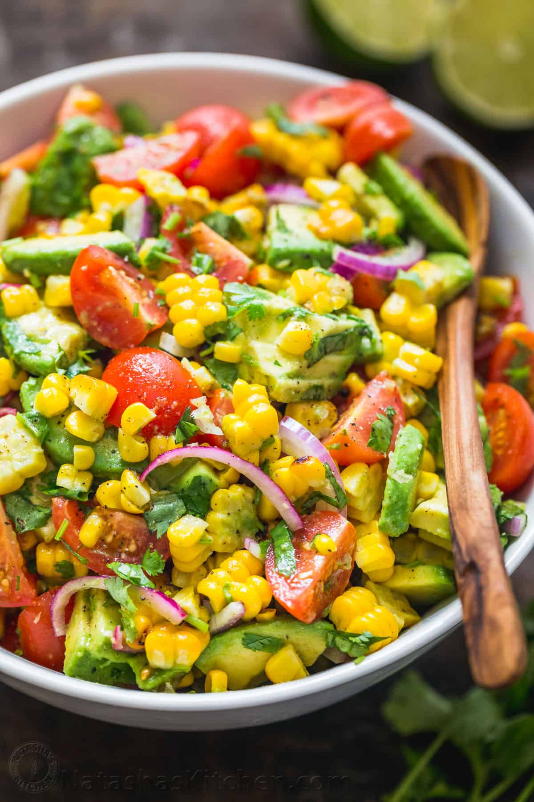

Avocado Corn Salad

Description
On a warm Summer's day, make this beautiful avocado and corn salad to cool you down! It is creamy, crunchy and nutritious with lots of wonderful colours to please the eye.
Ingredients
- 1 lb cherry tomatoes, halved or quartered
- 3 ears of corn, cooked, shucked and cut off the cob
- 2 avocados, peeled, pitted and sliced
- 1/2 red onion (medium), thinly sliced
- 1/4 cup cilantro, chopped (1/2 small bunch)
- 2 Tbsp extra virgin olive oil
- 2 to 3 Tbsp lime juice, from 1 to 2 limes
- garlic cloves, pressed or finely minced
- 1 tsp sea salt , or 3/4 tsp table salt
- 1/8 tsp black pepper
Steps
-
In a large salad bowl, combine sliced tomatoes, corn kernels, sliced avocado, thinly sliced red onion, 1/4 cup chopped cilantro and press in 2 garlic cloves.
-
Drizzle the top with 2 Tbsp extra virgin olive oil, 2-3 Tbsp lime juice (adding it to taste). Add 1 tsp sea salt and 1/8 tsp black pepper, or season to taste. Toss the salad gently just until combined and serve.